Introduction
INTRODUCTION
Dans le cadre du TEKBOT Robotique Challenge 2025, notre équipe a conçu et réalisé un convoyeur à tapis roulant destiné au transport de déchets. Ce projet constitue la phase finale des tests de pré-sélection du concours, une étape clé pour évaluer les compétences techniques et la compréhension des systèmes mécatroniques avant d'accéder aux phases avancées.
L'objectif global du concours est de développer un robot intelligent capable de collecter des déchets, de les déposer sur un tapis roulant, puis de procéder à un tri automatisé selon plusieurs critères (forme, couleur, matière, etc.). Notre mission actuelle se concentre sur la maîtrise des bases mécaniques et fonctionnelles du système de convoyage, un élément central pour le robot.
La réalisation de ce convoyeur est donc une étape préparatoire stratégique, permettant à notre équipe d'acquérir les compétences nécessaires pour relever les défis technologiques à venir.
CONTEXTE ET JUSTIFICATION
Le TEKBOT Robotique Challenge 2025 vise à stimuler l'innovation chez les étudiants, en les engageant dans la conception de systèmes robotiques intelligents pour la gestion des déchets. Dans un contexte mondial marqué par l'urgence écologique et la nécessité d'automatiser les tâches environnementales, ce concours met l'accent sur des solutions robotisées capables de collecter, trier et transporter les déchets de manière autonome.
Notre projet s'inscrit dans la phase de pré-sélection, qui teste nos compétences techniques avant l'intégration complète du robot. Nous avons donc conçu un convoyeur à tapis roulant motorisé, élément clé du système global, assurant le défilement régulier des déchets pour leur reconnaissance et tri par la partie intelligente du robot.
L'équipe est divisée en trois pôles : mécanique, électronique et intelligence artificielle. Pour ce prototype, nous avons combiné composants classiques et pièces imprimées en 3D, afin de répondre aux exigences de légèreté, précision et adaptabilité.
Ce projet nous a permis de nous familiariser avec les principes fondamentaux de transmission mécanique, d'entraînement motorisé et d'assemblage modulaire, compétences indispensables pour les étapes ultérieures.
PROBLÉMATIQUE
Concevoir un convoyeur à tapis roulant pour le tri des déchets soulève plusieurs défis : assurer un déplacement fluide, une transmission fiable du mouvement moteur, une structure stable, tout en intégrant des pièces imprimées 3D robustes. Le système doit aussi rester évolutif pour une future intégration à un robot intelligent.
OBJECTIFS
Objectif général : Concevoir un convoyeur motorisé fiable et stable pour le transport des déchets.
Objectifs spécifiques :
- Maîtriser la transmission du mouvement par moteur et engrenages.
- Assurer la stabilité mécanique du tapis roulant.
- Intégrer des pièces imprimées en 3D adaptées.
- Préparer le convoyeur à une future intégration avec un système intelligent.
Réalisation
RÉALISATION
Cahier des charges
1. Fonctionnalités attendues
Le convoyeur doit transporter les déchets de l'entrée à la sortie. Il fonctionne de manière conditionnelle :
- Marche uniquement lorsqu'un déchet est détecté.
- Arrêt en l'absence d'objet.
Cette logique vise à économiser l'énergie et limiter l'usure mécanique.
2. Contraintes règlementaires
- Dimensions maximales :
- Longueur : 650 mm
- Hauteur du tapis : 100 mm
- Charge maximale : 99 g par objet.
- Aucun critère imposé sur la vitesse, le type de motorisation, matériaux, transmission, ou alimentation électrique.
3. Contraintes internes
- Structure compacte et optimisation des volumes pour limiter la matière (impression 3D).
- Robustesse pour supporter plusieurs cycles d'utilisation.
- Facilité d'assemblage et maintenance rapide.
Choix techniques et justifications
1.1 Moteur
Le moteur XD37GB-555 (12 V, réducteur 1:17) a été retenu pour sa disponibilité, son compromis couple/vitesse adapté à la charge, sa robustesse, et sa tension standard facilitant l'intégration. Le réducteur permet une vitesse modérée (~17,65 tr/min), adaptée au convoyeur.
1.2 Tapis roulant
Nous avons choisi un tissu dur en remplacement du caoutchouc ou pneus recyclés, peu accessibles. Malgré un poids légèrement supérieur, ce matériau offre une adhérence suffisante pour le déplacement fiable des déchets, répondant aux contraintes d'approvisionnement.
1.3 Transmission
La transmission par engrenages métalliques est privilégiée pour minimiser les pertes d’énergie et garantir précision, fiabilité et durabilité. Les courroies, sources de glissements et difficiles à adapter, ont été écartées.
1.4 Structure
Les pièces sont imprimées en 3D avec des filaments PLA ou PETG, offrant rigidité, légèreté et précision, tout en limitant coûts et délais. Les pièces soumises à fortes contraintes pourront être renforcées ou métalliques, mais la simplicité et le poids léger restent prioritaires.
1.5 Impression 3D
Choisie pour :
- La grande précision dans la fabrication.
- La liberté de conception (formes complexes).
- La promotion des technologies modernes du concours.
- La réduction des coûts et délais.
Le PLA (Acide Polylactique)a été choisi pour sa facilité d’impression, sa bonne précision, son faible coût et son aspect écologique.
1.6 Roulements
Des roulements à billes à contact radial équipent les roulettes tendeuses pour :
- Réduire les frottements.
- Améliorer la durée de vie et stabilité.
- Assurer précision et bon alignement du tapis.
Leur intégration s’est révélée efficace dès les premiers tests.
1.7 Système de tension du tapis
Un système vis-écrou longitudinal associé à une roue folle mobile sur glissière assure la tension :
- Réglage précis millimétrique évitant relâchement ou surtension.
- Fiabilité mécanique, robuste et peu sensible aux vibrations.
- Facilité d’assemblage avec composants standards (vis M8, écrou H M8).
- Adaptation au design longitudinal, optimisant la stabilité et le guidage.
- Optimisation de l’espace grâce à la mobilité de la roulette dans le bâti.
Le mécanisme assure la tension constante et la longévité du tapis.
1.8 Déchets en carton
Le carton est choisi pour sa légèreté, sécurité, facilité de manipulation, et sa disponibilité à faible coût. Il limite la charge motrice et assure la stabilité du transport.
4. Conception et modélisation
Assemblage du bâti
Le bâti est divisé en six pièces distinctes, regroupées en deux ensembles (A1 et A2) pour tenir dans le volume d'impression 3D (256 mm³). Chaque assemblage respecte contraintes d'encombrement, solidité et assemblage mécanique.
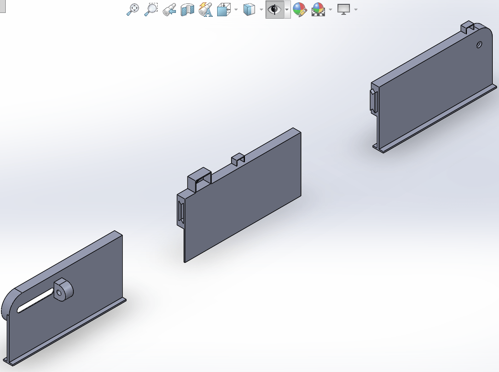
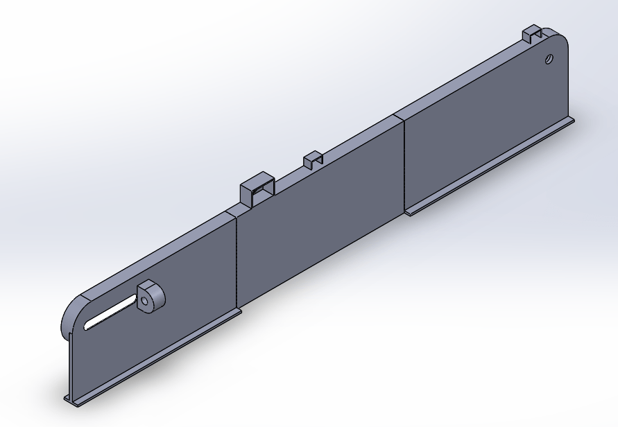
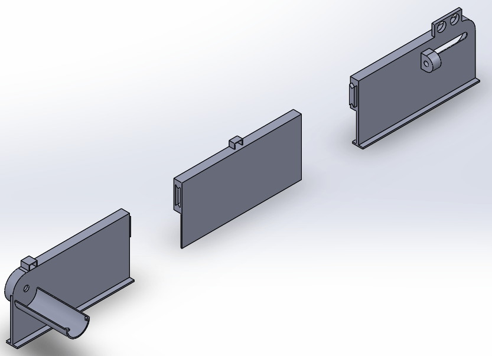
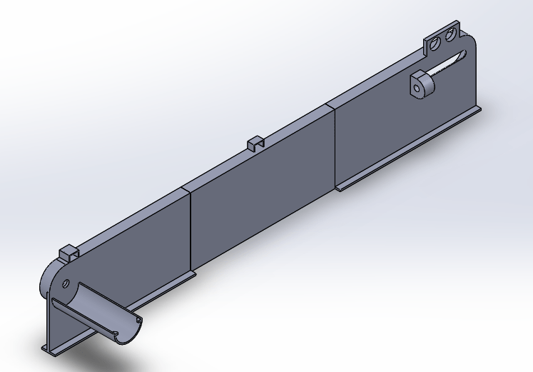
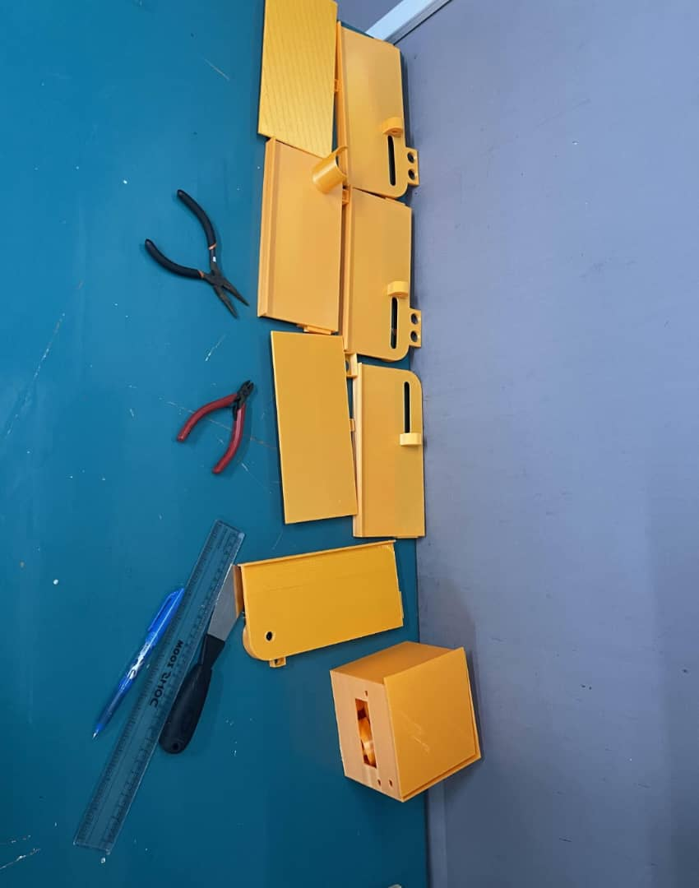
Roulettes tendeuses
Deux modèles :
- Une roulette fixée au moteur, avec cannelure pour accouplement direct sans courroie, réduisant les pertes d'énergie.
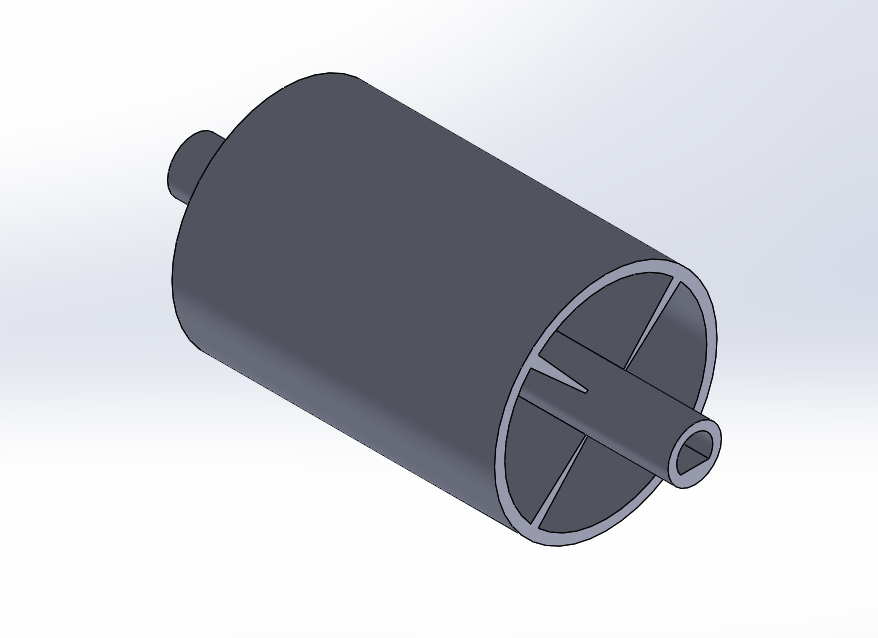
- Une roulette mobile sur glissière pour tension réglable via système vis-écrou.
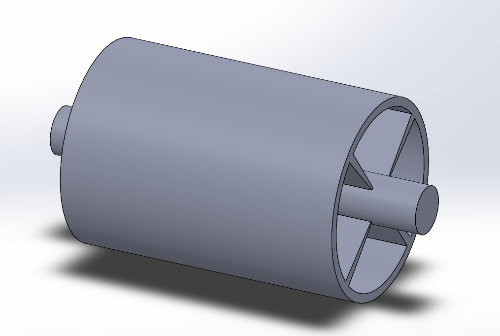
Système de tension
Deux pièces principales :
- Pièce mobile glissant dans le bâti, avec vides pour réduire matière et faciliter déplacement.
- Pièce extérieure solidaire de la vis M8 qui agit sur la roulette pour tension longitudinale.
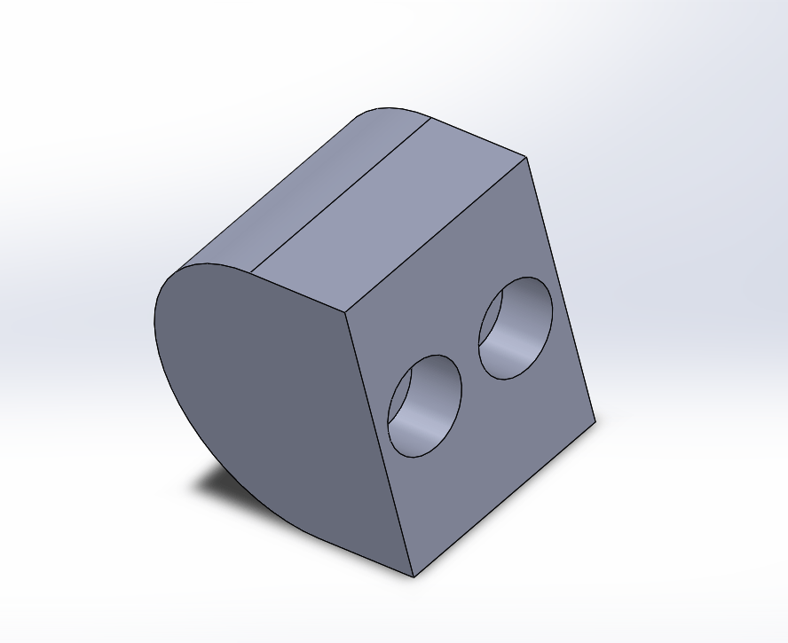
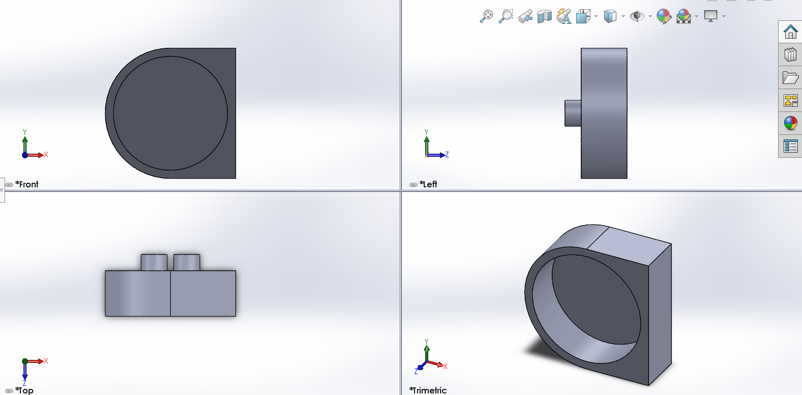
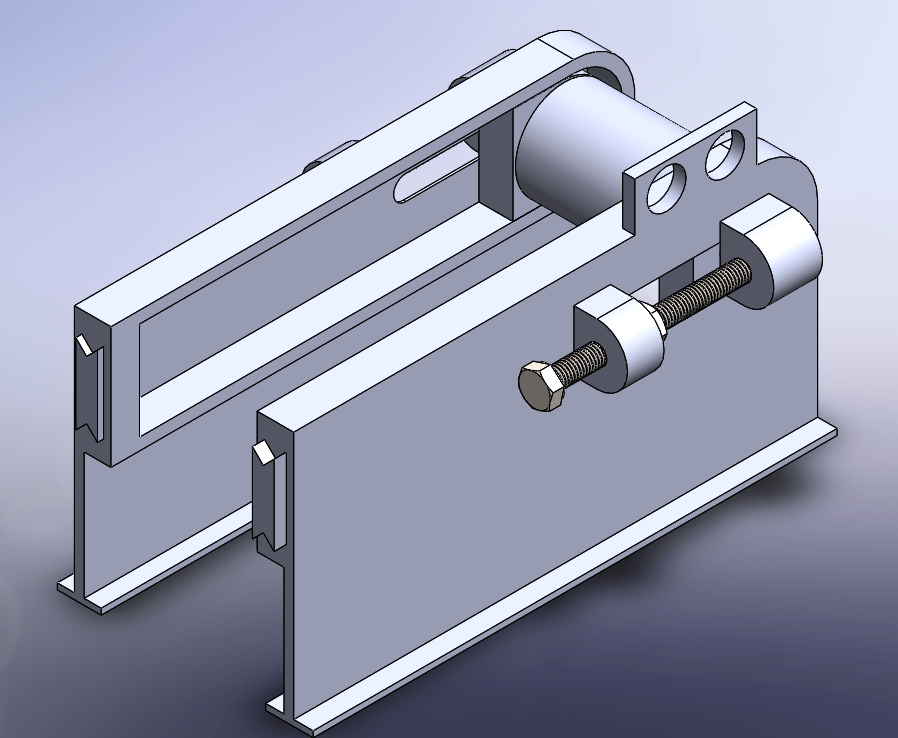
Déchets
Une pièce cube modélisée et dupliquée pour simuler plusieurs déchets.
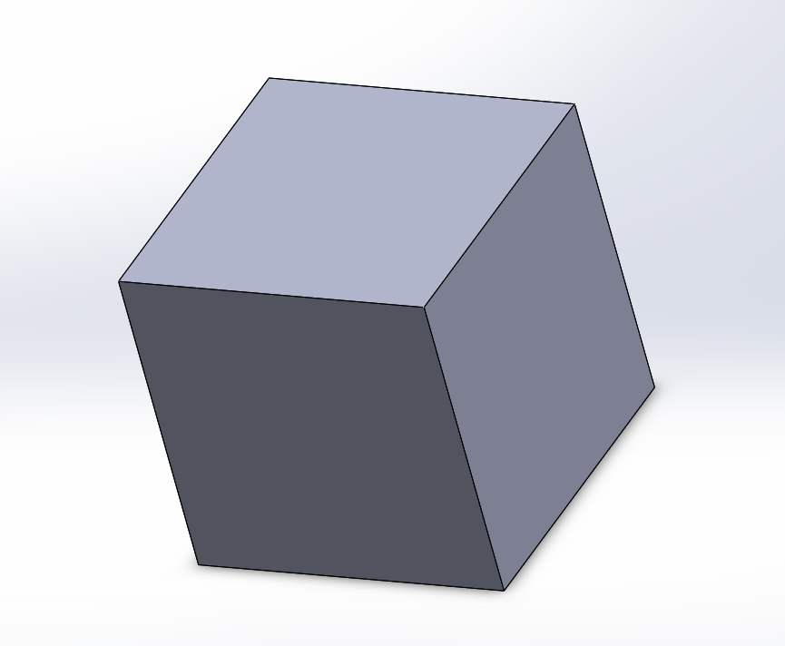
Assemblage final
L’assemblage complet a été réalisé dans SolidWorks, la fonction « courroie » pour modéliser le tapis roulant et synchroniser les roulettes. Pour valider le fonctionnement de notre convoyeur, nous avons utilisé les fonctions Gravité, Moteur et Contact dans SolidWorks.
- La gravité simule le poids des déchets.
- Le moteur entraîne la roulette motrice, ce qui met le tapis en mouvement.
- Le contact assure l’interaction entre les déchets et le tapis.
Afin d’obtenir une animation réaliste, nous avons temporairement ajouté des roulettes intermédiaires sous le tapis. Celles-ci permettaient aux déchets de rester en contact avec une surface durant l’animation.
Elles ont ensuite été masquées, car elles ne font pas partie du système réel.
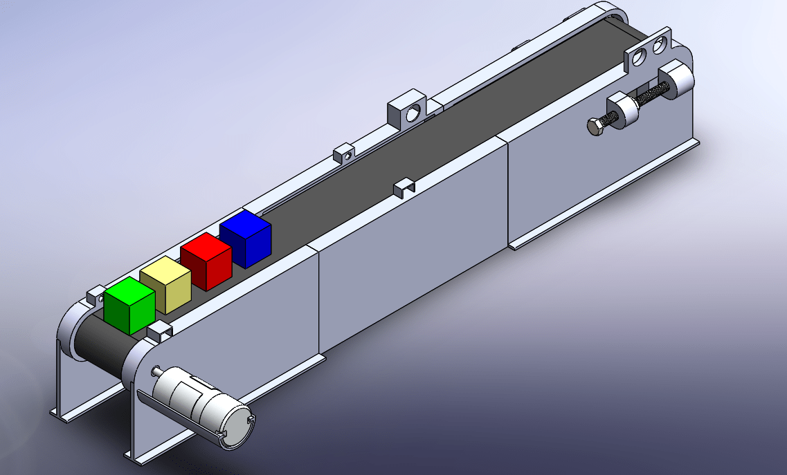
La vidéo ci dessous montre une simulation du système.
Problèmes rencontrés
5. Problèmes rencontrés
Plusieurs difficultés ont été rencontrées lors de la phase de montage et d'ajustement mécanique :
Fixation du moteur
Le moteur étant relativement lourd et de forme cylindrique, il était difficile à stabiliser dans le support prévu. Lors de la mise en marche, à cause de son couple élevé, il avait tendance à tourner sur lui-même, rendant le transfert du mouvement instable. Un renforcement du support a été nécessaire pour le fixer solidement.
Problèmes avec les roulettes
Les tiges des roulettes n'étaient pas parfaitement droites, ce qui empêchait leur rotation libre dans le bâti. Cela a nécessité plusieurs ajustements avec du papier vert pour permettre un mouvement fluide.
Montage difficile des roulements :
Les roulements à billes n'ont pas pu être insérés facilement dans leur logement ni dans les roulettes. Un ajustement serré étant recherché, il a fallu les monter en force, ce qui a nécessité prudence et précision pour éviter d’endommager les pièces.
Système de tension :
Il a été difficile de trouver les vis adaptées (vis M8 avec filetage et longueur correcte) pour mettre en place le système de tension du tapis.
Stabilité au sol :
Le bâti du convoyeur n’était pas parfaitement plate, ce qui compliquait sa pose stable au sol. Des cales ou retouches ont été envisagées pour améliorer l’assise.
Découpe du tapis :
Le tissu utilisé pour le tapis n’a pas été facile à couper de manière droite et régulière, ce qui a affecté temporairement sa tension et son positionnement. Des ajustements manuels ont été nécessaires pour obtenir une découpe correcte.
Conclusion
La réalisation de ce convoyeur a permis de développer un prototype fiable et conforme aux exigences du TEKBOT Robotique Challenge 2025. Les choix techniques, l’impression 3D et l’optimisation de la transmission ont assuré un fonctionnement efficace. Ce projet constitue une étape clé pour préparer l’intégration future du système intelligent et renforcer les compétences de notre équipe.
Simulation après impression et sur SolidWorks
Animation de la simulation du convoyeur sous SolidWorks montrant le mouvement du tapis et le transport des déchets.
Simulation réelle du convoyeur sous SolidWorks montrant le mouvement du tapis et le transport des déchets.